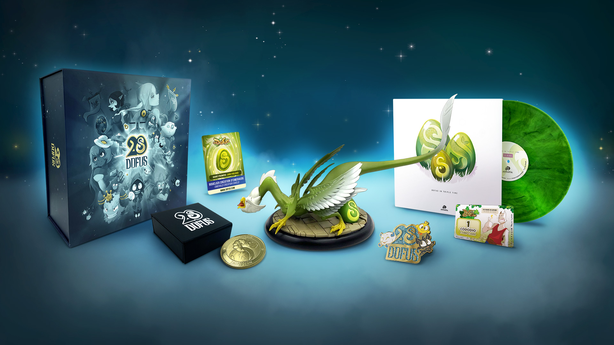

Dragon, kama, carte de loterie, musique champêtre, pin’s et message téléphonique :
retrouvez tout ce qui faisaitDOFUSau début des années 2000 grâce
à un prestigieux coffret anniversaire,
une figurine et une statue
du Dragon du Dofus Émeraude.

Back to rush - Tout les détails pour vous préparer au grand départ !
Lors de l'annonce de l'événement Back to Rush le 5 novembre, nous vous avions assuré
que nous reviendrions avec davantage de précisions. Nous tenons notre promesse ! À l'approche du
lancement de DOFUS 3.0, il est temps d'explorer en profondeur
les règles et les
mécanismes de
cet événement qui s'apprête à marquer une étape importante dans l'histoire du Monde des Douze.
Les équipes
L'événement met en compétition quatre équipes d'esport
prestigieuses, déjà présentées dans une
annonce antérieure. Chacune de ces équipes est dirigée par un Général, assisté par des
Officiers :
- Karmine Korp :
Kameto et Kotei, épaulés par Nozadah, LastBaroudeur, Papaye et Magem
- Solary :
Sakor, Wakz, Chap, et Sapeuh, accompagnés par Laniyelle, Tarkan, Phallen et DofusAoCubo.
- Aegis :
MisterMV et DFG, avec Barbe Douce, Timtoobias, ShojiTV et Single-Malt.
- GentlesMates :
Squeezie et Nikof, soutenus par Humility, Huz, Tsunadida et Yoda.
Pour pimenter encore davantage le défi, nous vous présentons
une cinquième équipe ! Sa particularité ? Elle ne comptera
pas de généraux. Cette équipe symbolise la force et la
passion de la communauté, soutenue par
des créateurs de contenu de l'univers de DOFUS, qui incarnent créativité, expertise et
convivialité. En intégrant cette équipe, vous aurez l'occasion de démontrer que
l'auto-organisation peut rivaliser avec des équipes plus « structurées » (mais
cela reste à prouver…).
Ankama :
composée de Pro-Team, Zeratoul, Feral, et Volcasaurus.
Les rôles au sein des équipes
- Les généraux :
Ils disposeront d'objectifs stratégiques spécifiques et devront surveiller l'évolution
globale de leur équipe tout en accumulant des points bonus pour optimiser les résultats.
- Les Officiers :
Ils devront relever des défis spécifiques, ce qui leur permettra d'ajouter des points bonus
pour renforcer l'esprit d'équipe.
- Vous, les joueurs :
Vous participerez à la victoire de votre équipe en accomplissant des Succès Pionniers, en
prenant part aux Perturbations Krosmiques, ou en contribuant à la Progression Globale.
Cependant, gardez à l'esprit que ces défis sont disponibles sur tous les serveurs, il est
donc essentiel que les communautés aient des joueurs répartis sur tous les royaumes de jeu.
Comment Participez ?
- Dates
du 3 décembre au 7 janvier.
- Conditions d'accès
connectez-vous sur un nouveau serveur (monocompte ou multicomptes), créez votre personnage
et complétez le tutoriel. Une interface de choix apparaîtra, vous offrant le choix parmi les
cinq présentées. votre choix sera définitive, il ne sera pas possible de le modifier. Après
quoi, vous recevrez un personnage suiveur aux couleurs de votre équipe choisie, et une
altération.
- Objectifs
maintenant que vous êtes dans une équipe, le but sera de gagner un maximum de jetons : les Points de Rush.
Calendrier